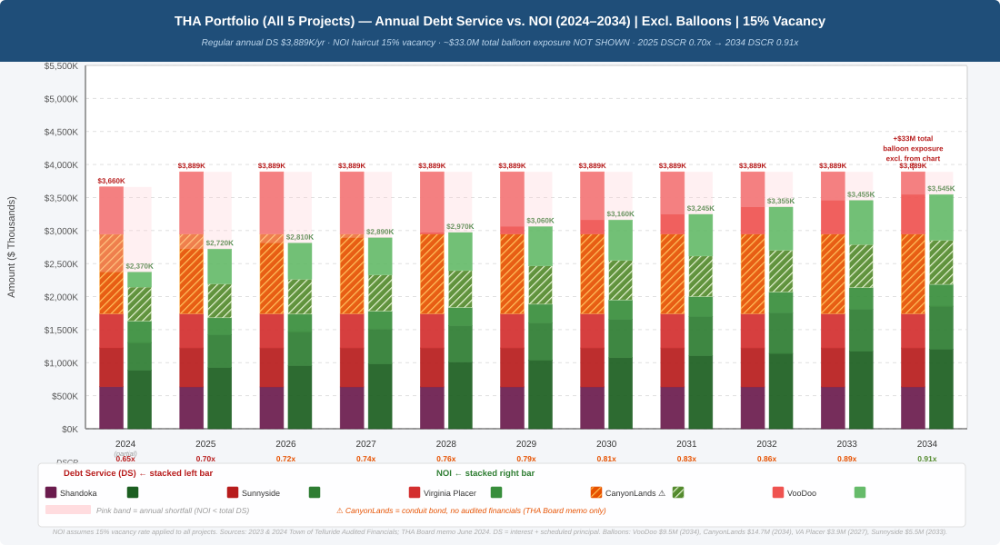
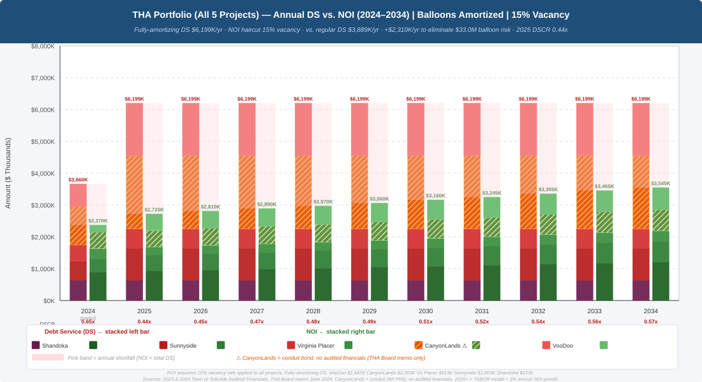

1. A Budget That Has Tripled
The Town of Telluride’s total budget has grown from $32.1 million in 2017 to $103.3 million in 2025 — a 222% increase in just eight years. While some of this growth reflects rising costs statewide, the rate far outpaces both inflation and population growth in San Miguel County.
The Affordable Housing Fund, supported by a 0.5% sales tax, a 2.5% short-term rental excise tax, and a 2.222-mill property tax levy, has grown from under $2 million in 2017 to over $11 million in 2025 — a 517% increase. The Shandoka Fund alone surged from $1.5 million in FY2019 to $11.1 million in FY2025, largely due to absorbing VooDoo’s financial obligations.
Town of Telluride — Total Budget (2017–2025)
Affordable Housing Fund Growth (2017–2025)
2. The Debt Portfolio: $76M+ and Counting
The Telluride Housing Authority has accumulated more than $76 million in bonded debt across five projects — none of which was put to a public vote. Colorado’s Housing Authorities Law (C.R.S. §29-4-201 et seq.) permits this only when bonds are payable from project revenues, not the Town’s general funds. Yet THA’s own budget documents show that rental income covers only a fraction of annual debt service obligations.
| Project | Bond Year | Principal | Annual Debt Service | Annual Revenue | Coverage | Balloon Payment | Balloon Year |
|---|---|---|---|---|---|---|---|
| Shandoka | 2021 | $3,990,000 | $635,032 | $2,000,000 | 3.15× | — | — |
| Virginia Placer | 2017 | $8,602,000 | $518,871 | $575,000 | 0.58× | $3,040,000 | 2036 |
| Sunnyside | 2021 | $11,965,000 | $591,800 | $685,000 | 0.50× | $6,170,000 | 2040 |
| VooDoo | 2022–23 | $21,370,000 | $1,190,240 | $620,000 | 0.66× | $23,045,864 | 2032 |
| CanyonLands (Est.) | 2024 | $26,000,000 | $556,000 | $606,000 | 0.50× | TBD | TBD |
| TOTAL | $71,927,000 | $3,491,943 | $4,486,000 | $32,255,864 |
Red-shaded rows indicate projects where annual revenue does not cover annual debt service. Coverage ratios below 1.0× mean rental income alone cannot service the debt.
THA Debt by Project — Principal, Interest & Balloon Payments
3. CanyonLands: How It’s Supposed to Work — and Why It Doesn’t
In June 2024, the Telluride Housing Authority approved the CanyonLands/Tower House project — a 39-unit development (28 deed-restricted rentals and 11 for-sale units) financed with a $26.575 million taxable multifamily revenue bond issued through the Wisconsin Public Finance Authority and placed privately by J.P. Morgan.
The project’s financing plan relies on a cross-subsidy: proceeds from the sale of 8 affordable condominiums and 3 market-rate townhomes (estimated at approximately $9.4 million) are to be applied immediately to “buy down” the bond principal, leaving a smaller remaining debt to be serviced by rental income. The problem is that even after applying roughly $10 million in sales proceeds to reduce principal, the project’s 28 rental units generate insufficient income to cover the remaining debt service.
CanyonLands — Rent Income vs. Debt Service (Scenario Analysis)
| Scenario | Net Operating Income | Annual Debt Service | Annual Shortfall | DSCR | 10-Year Gap |
|---|---|---|---|---|---|
| Base Case (95% occ) | $606K | $1,204K | −$598K | 0.50× | −$5.98M |
| Downside (90% occ) | $574K | $1,277K | −$703K | 0.45× | −$7.02M |
| Stress (85% + 20% cost) | $504K | $1,699K | −$1,196K | 0.30× | −$11.96M |
Additional Risk Factors
Moral obligation with no legal backstop: The bond is non-recourse to the Town and THA on paper. In practice, the Town passed a formal Replenishment Resolution committing to refill the debt-service reserve fund if drawn. This is not a legal obligation, but given that the Town Council and THA board are the same people, it functions as a political commitment.
Sales-price risk: The entire business plan depends on condo and townhome sales generating approximately $9.4 million. A 10–15% decline in sale prices would significantly reduce the principal paydown, worsening DSCR on the remaining rental debt.
No voter approval: Like VooDoo, Sunnyside, and Virginia Placer, CanyonLands was not submitted to voters. The conduit bond structure (through a Wisconsin authority rather than a Colorado entity) was used precisely to avoid the need for local voter approval under TABOR.
Pre-development loan at risk: The Town advanced $1.5 million in pre-development costs, to be reimbursed at financial close for project proceeds. If the project experiences a default or significant financial distress, this loan — likely subordinate to the bond indenture — would be among the first funds lost.
THA Portfolio — Debt Service vs. Income (All 5 Projects)
The following two charts show the full THA housing portfolio’s annual debt service stacked against net operating income from 2024 through 2034. The first chart excludes balloon payments (showing only regular annual debt service); the second amortizes the $33 million in balloon exposure across the remaining loan terms.
Scenario 1: Excluding Balloon Payments (Regular DS Only)

Scenario 2: Balloons Amortized (Full Debt Burden)

4. Recession Vulnerability & Balloon Payment Risk
Telluride’s economy is heavily dependent on tourism and short-term rentals — revenue sources that are acutely sensitive to economic downturns. The Town’s three dedicated housing tax streams (sales tax, short-term rental excise tax, and property mill levy) would all contract sharply in a recession, precisely when they are most needed to service housing debt.
The portfolio’s “moral obligation” structure compounds this risk. THA’s 2025 budget includes explicit subsidy line items — $219,000 for VooDoo, $218,000 for Virginia Placer, and $377,000 for Sunnyside — acknowledging that rental income alone cannot service these bonds. If the Town ever declined to appropriate these subsidies, bond default and loss of public housing assets would follow.
Project Revenue vs. Annual Debt Service (FY2025)
5. Balloon Payments: $32.3M in Concentrated Risk
Three of THA’s five projects carry large balloon payments — lump sums due at maturity that must either be refinanced at prevailing interest rates or paid in full. These payments total $32.26 million and cluster between 2032 and 2040. The largest — VooDoo’s $23.05 million, due in 2032 — exceeds the project’s total expected rental income over its remaining bond life. If interest rates are elevated at refinancing, the Town’s annual obligations could increase substantially.
Balloon Payment Timeline
Debt Service Obligations vs. Revenue Under Recession Scenarios
6. Proposed Future Development: An Additional $388.8 Million
Beyond existing obligations, the Town has three major developments in the published phase of approval that would add an estimated $388.8 million in new construction costs. Using the per-square-foot costs established by recent THA projects ($1,000/sf for residential, $700/sf for commercial, $150/sf for parking), these figures represent a potential debt obligation that dwarfs the current $76 million portfolio.
If financed through bonds at terms comparable to VooDoo (5.7–7.15% interest, 10–20 year terms with balloon payments), the interest burden alone on $388.8 million could exceed $150 million over the bond life — bringing total future obligations above $500 million. Combined with the existing $76 million portfolio and $32 million in pending balloon payments, the Town would be managing well over half a billion dollars in housing-related debt in a community of approximately 2,500 permanent residents.
| Development | Units | Est. SF | Cost/SF | Total Est. Cost |
|---|---|---|---|---|
| Lot L Development | ||||
| Garage Residential | 900 | 315,000 | $150 | $47,250,000 |
| Commercial/Fitness | 60 | 60,000 | $1,000 | $60,000,000 |
| Parking | — | 10,000 | $1,000 | $10,000,000 |
| Lot L Subtotal | 385,000 | $117,250,000 | ||
| Chair 7 / Carhenge | ||||
| Residential Hotel/Commercial | 230 | 230,000 | $1,000 | $230,000,000 |
| Parking | 38 | 38,000 | — | — |
| Residential | 230 | 80,500 | $150 | $12,075,000 |
| Chair 7 Subtotal | 348,500 | $242,075,000 | ||
| New Gondola | — | 42,100 | $700 | $29,470,000 |
| GRAND TOTAL | 775,600 | $388,795,000 | ||
Proposed Development — Estimated Costs
7. Potential TABOR Violation: The Enterprise Test
Colorado’s Taxpayer’s Bill of Rights (TABOR) requires voter approval for government debt. THA avoided this requirement by claiming “enterprise” status under Colo. Const. art. X, §20(2)(d), which exempts entities that operate as self-sustaining businesses receiving less than 10% of revenue from government sources. The three-part test established in Nicholl v. E-470 Pub. Highway Auth., 896 P.2d 859 (Colo. 1995) requires that THA satisfy all three grounds simultaneously. Based on publicly available financial data, THA fails all three.
Ground 1: The 10% Government Revenue Threshold
Nicholl holds that an entity receiving 10% or more of revenue from government sources loses enterprise status. At the entity level, THA’s identified government funding share exceeds 52% of all revenues — more than five times the TABOR threshold.
Government Revenue Share vs. TABOR 10% Enterprise Threshold
Legal Consequences If Enterprise Status Is Lost
If a court determines THA is not a TABOR enterprise, the consequences are severe: (a) all future debt issuance and revenue increases require a TABOR vote; (b) any taxpayer may file suit under C.R.S. §29-4-207 seeking restitution of all TABOR-restricted revenues collected without voter approval, at 10% annual interest, back four prior fiscal years; (c) projects generating DSCR below 1.0× without government subsidy are in arguable violation of C.R.S. §29-4-229 independent of TABOR; and (d) revenue bond covenants typically require the issuer to maintain enterprise status — loss could trigger technical default provisions.
Per-Unit Public Cost Escalation by Project
8. Summary of Current Debt
The two charts below present the most favorable and true-cost views of THA’s portfolio. Chart 1 shows only regular annual debt service against net operating income — excluding $33.0 million in balloon payments entirely. Even under this optimistic framing, the portfolio DSCR starts at just 0.82× in 2025 and does not reach 1.0× until 2032, assuming 3% annual NOI growth. Until then, every year runs a structural deficit that must be filled by Town appropriations.
Chart 2 shows the true cost of eliminating the portfolio’s $33.0 million balloon risk by converting all bonds to fully amortizing schedules. Annual debt service rises from $3,889K to $6,199K — an increase of $2,310K per year. Under this scenario, the 2025 DSCR drops to 0.52× and reaches only 0.67× by 2034, meaning the portfolio would never come close to self-sufficiency.
Sources & Methodology
All data in this analysis is derived from publicly available Town of Telluride and THA documents, including adopted budgets, audited financial statements, bond payment schedules, board meeting materials, and planning documents.
Town of Telluride — Budget & Financial Statements
THA Board Documents (CivicWeb)
Coverage ratios calculated from THA P&L data (FY2023–2025) compiled from Town of Telluride 2022 and 2023 Audited Financial Statements and 2025 THA Budget Projections. Debt service figures from bond payment schedules in the Town of Telluride 2022 Budget Book, pp. 79–80.
Recession modeling based on 15% (mild) and 25% (severe) revenue declines applied to tourism-dependent tax streams, consistent with Telluride’s experience during the 2008–2010 downturn.
TABOR enterprise test: Colo. Const. art. X, §20(2)(d); Nicholl v. E-470 Pub. Highway Auth., 896 P.2d 859 (Colo. 1995). Three-part test requires: (1) less than 10% government revenue, (2) operation as a business (self-sustaining), and (3) no taxing power or heavy public subsidy. All three must be satisfied simultaneously.